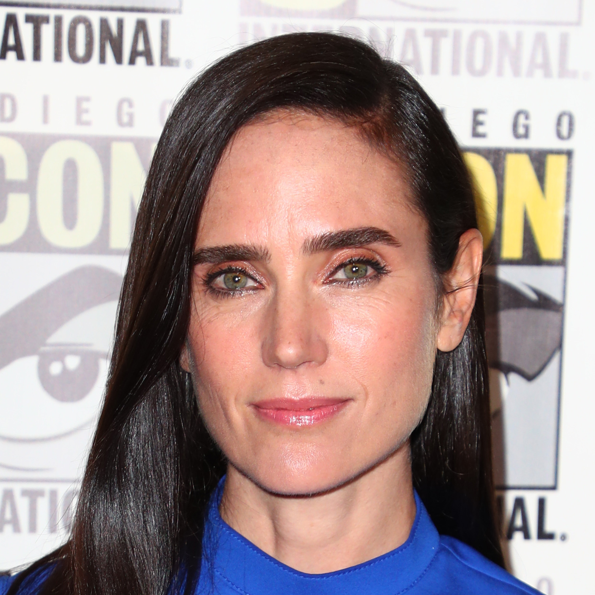

Cast

Tom Cruise
Capt. Pete 'Maverick' Mitchell

Jennifer Connelly
Penny Benjamin

Miles Teller
Lt. Bradley 'Rooster' Bradshaw

Glen Powell
Lt. Jake 'Hangman' Seresin

Val Kilmer
Adm. Tom 'Iceman' Kazansky

Jon Hamm
Adm. Beau 'Cyclone' Simpson

Bashir Salahuddin
Wo-1. Bernie 'Hondo' Coleman

Charles Parnell
Adm. Solomon 'Warlock' Bates

Monica Barbaro
Lt. Natasha 'Phoenix' Trace

Lewis Pullman
Lt. Robert 'Bob' Floyd

Jay Ellis
Lt. Reuben 'Payback' Fitch

Danny Ramirez
Lt. Mickey 'Fanboy' Garcia

Jack Schumacher
Lt. Neil 'Omaha' Vikander

Manny Jacinto
Lt. Billy 'Fritz' Avalone

Kara Wang
Lt. Callie 'Halo' Bassettn

Greg Tarzan Davis
Lt. Javy 'Coyote' Machado

Jake Picking
Lt. Brigham 'Harvard' Lennox

Raymond Lee
Lt. Logan 'Yale' Lee